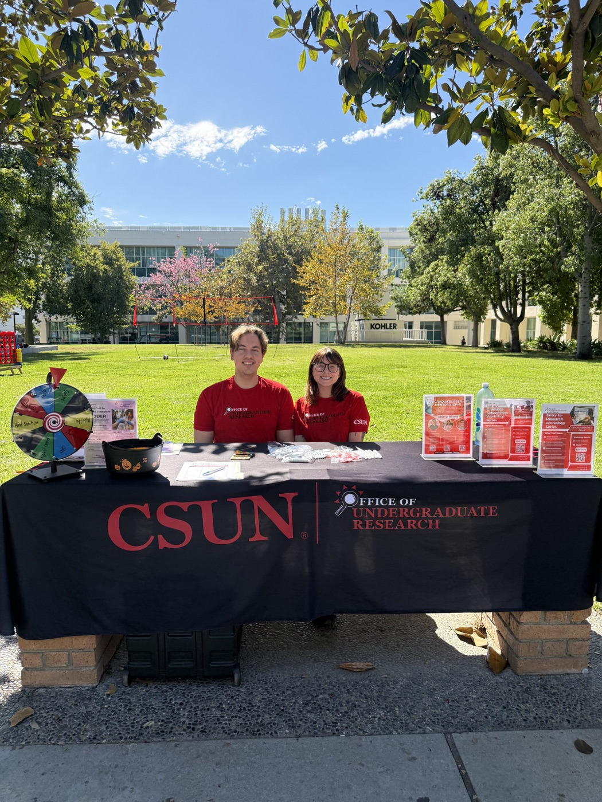
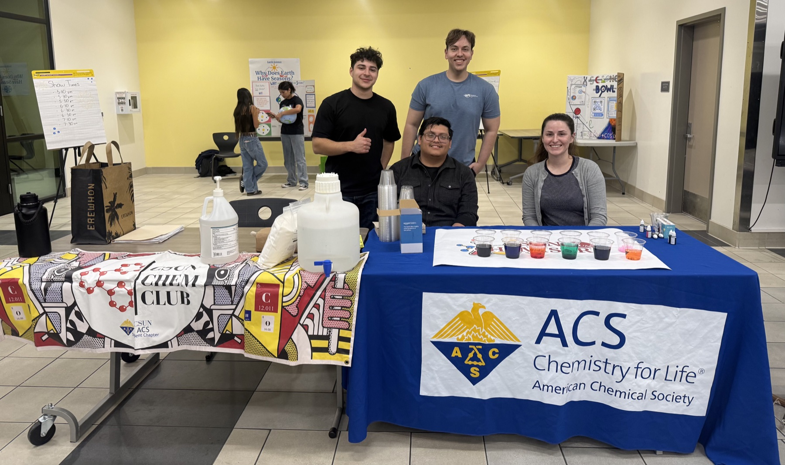
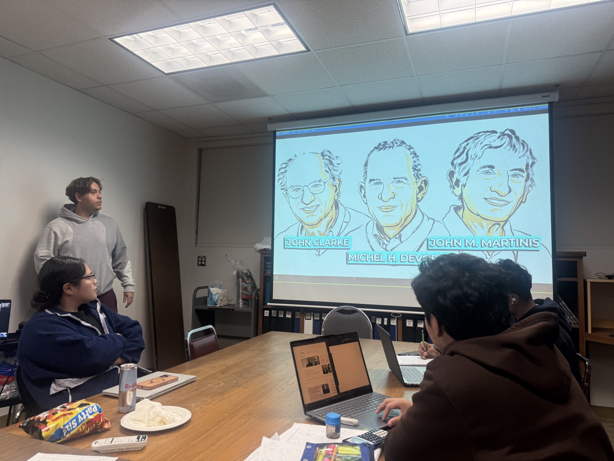
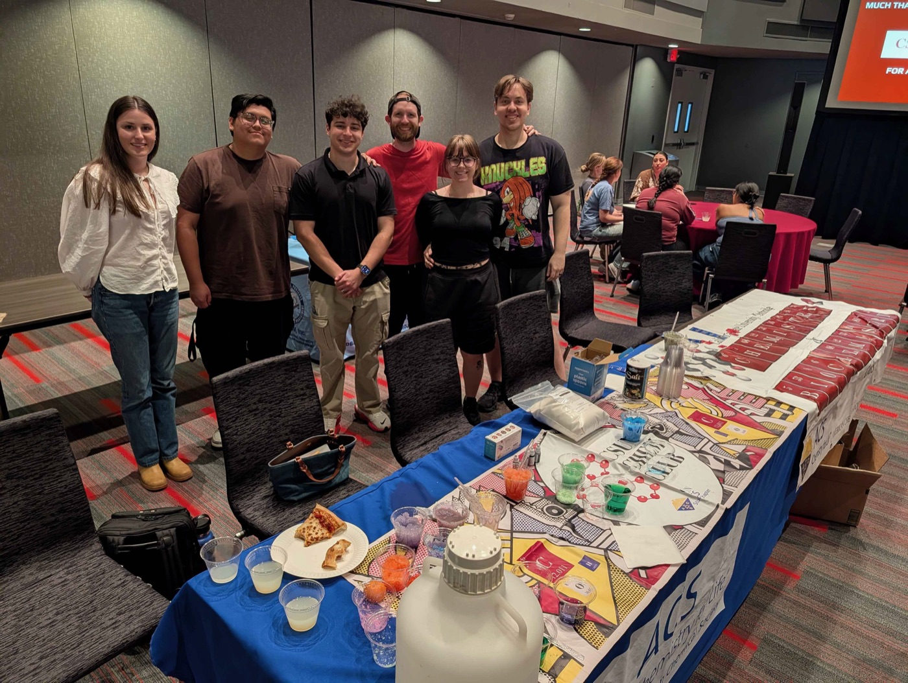
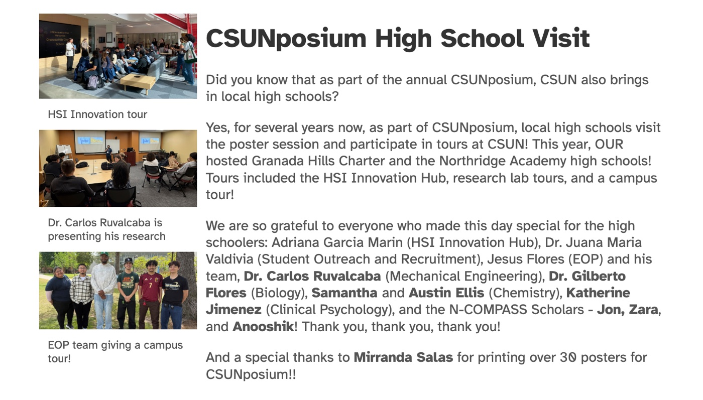

Research access
Opening routes into research
At Office of Undergraduate Research events, I help students find practical entry points into labs, mentorship, and research programs—including CSUN's annual Getting Into Research event.
Teaching · Mentorship · Community
Alongside my research, I work to make computational chemistry and research careers more approachable through teaching, mentorship, student-led discussion, and public science events.

Peer learning
As vice president and co-founder of CSUN's first Chemistry & Biochemistry Journal Club, I help coordinate article selection, speakers, and logistics. Meetings turn papers into collaborative conversations through figure analysis, group discussion, and student presentations.
I also contribute to Chemistry Club programs that connect current discoveries to the broader student community, including a “Breaking Science” discussion of the 2025 Nobel Prize in Physics.

Outreach in practice
From the first question about joining a lab to a public chemistry demonstration, access starts with a welcoming conversation.

Research access
At Office of Undergraduate Research events, I help students find practical entry points into labs, mentorship, and research programs—including CSUN's annual Getting Into Research event.

Chemistry community
Chemistry Club and ACS events create an informal way for students to encounter chemistry through visible, hands-on demonstrations and conversations with peers.

College access
For CSUNposium, I welcomed visiting high school students as they explored research posters, labs, and campus. At CSUN Science Day, I introduced local middle school students to high-pressure chemistry.
More ways I share science